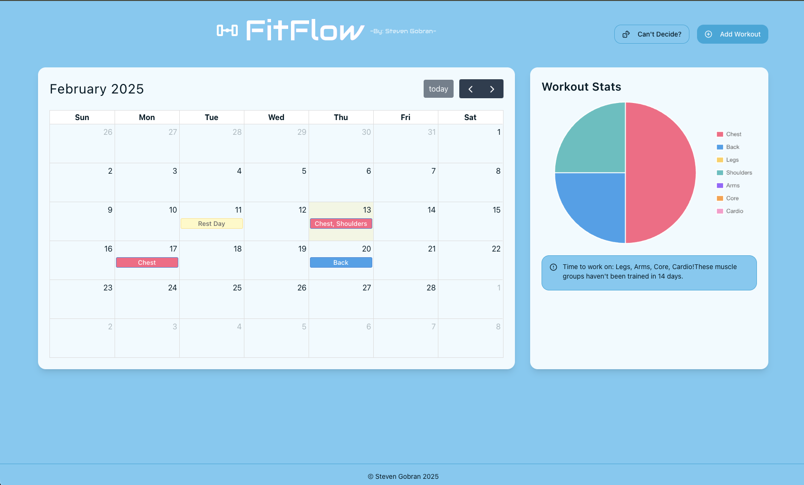

Computer Science Student | Software Developer | Tech Enthusiast
Hey! I’m Steven Gobran, a passionate Computer Science major with a minor in Business Systems and Analytics at Belmont University. Originally from Egypt, I am a first-generation college student driven by a love for technology, problem-solving, and innovation. With a strong foundation in software development, full-stack web design, game development, and automation, I thrive on building efficient, scalable, and impactful applications. I have experience working with multiple programming languages, frameworks, and development tools, allowing me to craft solutions that bridge creativity and functionality.
Middle Tennessee State University (Nashville, TN) – B.S. in Computer Science, Minor in Business Systems and Analytics (2023-2027)
Tutored students in C++ with a focus on object-oriented programming, recursion, and software engineering principles. Assisted in laboratory sessions to implement and analyze stacks, queues, linked lists, trees, and sorting algorithms. Guided students in debugging techniques, efficient memory management, and practical problem-solving strategies.
Delivered advanced on-campus courses in HTML, CSS, Python, Java, JavaScript, game development, and robotics. Led hands-on projects utilizing C++ and Unreal Engine to design and publish 3D games, offering students real-world development experience. Designed and implemented comprehensive STEM curricula, fostering technical expertise, critical thinking, and problem-solving skills among students.
Successfully co-founded and managed a landscaping business, overseeing daily operations, employee management, and project execution. Led a team to handle diverse landscaping jobs while coordinating schedules and ensuring timely completion of projects. Demonstrated leadership, time management, and organizational skills in growing the business from the ground up.
Taught app development using Swift and Xcode, as well as game development and robotics, to teen participants. Evaluated, documented, and reported students' progress, achievements, and engagement in STEM activities. Assisted with coding instruction, app design, and hands-on STEM projects, fostering youth interest in technology. Developed and implemented a project addressing program needs while enhancing student engagement in coding camps.
Developed an interactive Aim Trainer using Python and Pygame that dynamically generates targets at random intervals. Implements collision detection for accuracy assessment, leveraging object-oriented programming for modularity.
Created a menu-driven banking system with account management, including deposits, withdrawals, and balance checks. Implemented input validation and modular object-oriented programming for scalability.
Engineered a Python program to systematically extract and validate email addresses from text files, employing advanced string manipulation techniques to ensure proper formatting and domain compliance.

Fit Flow is a full-stack gym calendar app built with React.js, Node.js, and Java to help users track workout splits and maintain balanced muscle development. It features a coin-flip decision tool for choosing muscle groups, making training more interactive and fun. This project showcases my ability to build dynamic UIs, manage backend logic, and integrate interactive features, highlighting my skills in JavaScript, full-stack development, and problem-solving.
Email: stevengobran@gmail.com
Phone: (615) 336-7310